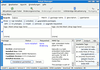

Wiki
Mitmachen
- Wikiartikel anlegen
- Howto anlegen
- Wiki-Referenz
- Wiki-Syntax
- Baustellen
- Artikelideen
- Ungetestete Artikel
- Ausbaufähige Artikel
- Fehlerhafte Artikel
- Rund ums Wiki
Konfiguration
- Backlinks anzeigen
- Exportieren
Adept
Archivierte Anleitung
Dieser Artikel wurde archiviert, da er - oder Teile daraus - nur noch unter einer älteren Ubuntu-Version nutzbar ist. Diese Anleitung wird vom Wiki-Team weder auf Richtigkeit überprüft noch anderweitig gepflegt. Zusätzlich wurde der Artikel für weitere Änderungen gesperrt.
Anmerkung: Dieser Artikel ist veraltet, eine Alternative ist der Artikel Softwareverwaltung KDE)
Adept ist ein Programm zur grafischen Paketverwaltung unter Kubuntu/KDE. Es dient als Oberfläche für APT, mit der Aufgabe, die Paketverwaltung komfortabel zu gestalten.
Adept befindet sich im K-Menü unter
"System -> Adept (Package Manager)"
Zum Start muss das Passwort eingegeben werden. So wird die unbefugte oder unbeabsichtigte Installation oder Deinstallation von Programmen verhindert.
Programme installieren¶
 Ein Programm zu installieren ist eigentlich ganz leicht: Kennt man den Namen des Paketes, kann man diesen oben in das Suchfeld eintippen. Die Suche startet schon mit dem ersten eingegebenen Buchstaben und verfeinert sich mit jedem weiteren. Sollte das Paket wider Erwarten nicht gefunden werden, muss man eventuell noch weitere Paketquellen freischalten (siehe unten).
In der Liste im unteren Bereich kann man durch einen Klick auf den Paketnamen bzw. den blauen Pfeil am linken Rand weitere Informationen zum Paket anschauen. Möchte man das Paket installieren, so klickt man auf die Schaltfläche "Zum Installieren vormerken". Alternativ kann man auch mit der rechten Maustaste ein Paket auswählen und dies im Kontextmenü auswählen. Alle notwendigen Abhängigkeiten werden damit automatisch zur Installation markiert.
Zur Installation der vorgemerkten Pakete klickt man in der Symbolleiste auf "Änderungen anwenden". Möchte man sich vergewissern, dass auch die richtigen Pakete installiert bzw. entfernt werden, sollte man in der Symbolleiste auf "Änderungsvorschau" klicken.
Paketquellen freischalten/aktivieren¶
Die Paketquellen kann man in Adept über das Menü "Ansicht -> Paketquellen verwalten" konfigurieren.
Allgemeine Informationen zu den Paketquellen findet man hier. Diesen Artikel sollte man sich vor dem Fortfahren durchgelesen haben.
Möchte man automatisch über verfügbare Updates der installierten Pakete informiert werden, so kann man das Paket
adept-notifier
installieren. Sollte man eine Minimal-Installation nutzen, bitte auch diesen Punkt beachten.
Standardquellen nutzen¶
Nach der Installation sind normalerweise die meisten Internet-Quellen für main, restricted und universe schon eingetragen, aber noch nicht aktiviert. Der Eintrag für die Sektion multiverse muss angegeben werden. Ab Feisty Fawn sind diese Einträge aber bereits alle getätigt und aktiviert.
Es reicht zuerst die deaktivierten (hellgrau markierten) Einträge mit einem Rechtsklick -> "Aktivieren" freizuschalten. Wichtig sind vor allem die Einträge mit einem deb am Anfang, welche die Binärpakete bereitstellen.
Es gibt vier wichtige "Distributionen" für Binär-Einträge:
dapper, dapper-updates, dapper-security und ggf. dapper-backports (siehe hier) wovon aber einige doppelt vorkommen können.
Um noch zusätzlich die multiverse-Sektion zu aktivieren, sucht man sich zu den vier Binär-Einträgen jeweils einen aus und klickt in der Spalte "Components" doppelt auf das Feld. Nun kann man einfach noch das Wort multiverse anfügen, mit einem Leerzeichen vom Rest getrennt.
Nach dem "Anwenden" und "Schließen" ist es wichtig, die Paketquellen mit einem Klick auf "Aktualisierungen holen" neu einzulesen.
Weitere Paketquellen hinzufügen¶
Gelegentlich wird in Wikiartikeln Software aus weiteren Paketquellen benötigt. Diese Paketquellen sind z.B. in der folgenden Form angegeben:
deb http://archive.czessi.net/ubuntu dapper main restricted universe multiverse
Hinweis!
Zusätzliche Fremdquellen können das System gefährden.
Um diese Quelle beispielsweise einzufügen, kopiert man diese einfach komplett in das Feld unten bei "New Repository" und klickt danach rechts auf "Hinzufügen".
Nach dem "Anwenden" und "Schließen" ist es wichtig, die Paketquellen mit einem Klick auf "Aktualisierungen holen" einzulesen.
Experten-Info:
Man kann auf diesem Weg auch Ubuntu Source-Paketquellen deb-src eintragen, was hier genauer erklärt ist, da man diese Quellpakete nur in der Konsole herunterladen kann.
Pakete entfernen¶
Um ein Paket zu entfernen, klickt man dieses einfach in der Übersichtsliste an und wählt dann die Schaltfläche "Entfernung vormerken" oder alternativ per Rechtsklick im Kontextmenü "Zum Entfernen vormerken".
Wichtig: Beim einfachen Entfernen eines Paketes bleiben Konfigurationsdateien - z.B. in /etc - zurück. Möchte man dies verhindern, so kann man die Option "Zum vollständigen Entfernen vormerken" wählen. Dies löscht alles, inklusive der Konfigurationsdateien. Dateien in den Homeverzeichnissen der Benutzer bleiben davon natürlich unberührt. Die Paketverwaltung wird nie Daten aus /home löschen!
Defekte Pakete reparieren¶
Ab und zu kann es passieren, dass "kaputte" Pakete gemeldet werden, wenn man ein Paket manuell installiert ohne dessen Abhängigkeiten zu erfüllen. In diesem Fall sucht man das Paket heraus (Bei "Status" erscheint "KAPUTT"!) und klickt auf "Installation vormerken". Sollte sich der Status des Paketes nicht ändern, so konnten nicht alle Abhängigkeiten aufgelöst werden. Hier muss man entweder die notwendigen Paketquellen freischalten oder das Paket wieder entfernen.
Adept-Benachrichtigungen¶
Bei der Minimalinstallation mit Hilfe der Alternate-CD erhält man keine Update-Benachrichtigungen trotz Installation des Paketes adept-notifier.
Die Ursache für dieses Problem liegt darin, dass Adept-Benachrichtigungen ein Update der APT-Quellen benötigen. In einer Standard Kubuntu-Installation erledigt dieses ein Cron Job über das Skript apt in /etc/cron.daily/. Im Falle einer minimalen KDE-Installation ist jedoch üblicherweise kein Cron-Daemon installiert, so dass der Cron-Job nicht ausgeführt wird. Dies lässt sich durch die Installation eines Cron-Daemons (z. B. anachron) beheben.
Problembehebung¶
Diverse - insbesondere proprietäre - Pakete aus den Ubuntu-Quellen fordern bei der Installation die Bestätigung einer Lizenzvereinbarung (klassische Kanditaten sind beispielsweise Java und der VMware-Player). Adept bleibt, solange er auf diese Eingabe wartet, scheinbar stehen. Nur wenn man den Button "Details ansehen" anwählt, sieht man die eigentlich für die Shell gedachte Ausgabe des jeweiligen Pakets.
Zumindest unter Edgy ist es in Adept darüber hinaus nicht möglich, diese geforderte Bestätigung der Lizenzvereinbarung abzugeben, noch die Installation geordnet abzubrechen. Wird der Installationsprozess in Adept mit dem Button "Abbrechen" beendet, so bleibt das jeweilige Paket unvollständig installiert. Die Reste der Installation müssen in mehreren Schritten auf der Konsole beseitigt werden:
sudo rm /var/cache/apt/archives/lock /var/lib/apt/lists/lock /var/lib/dpkg/lock sudo dpkg --configure -a
Unter ungünstigen Bedingungen kann bei dem gezwungener Maßen ungeordneten Abbruch der Installation in Adept auch die Paketdatenbank zu Schaden gekommen sein. Ein deutlicher Hinweis ist eine Fehlermeldung "dpkg: Fehler beim Bearbeiten von [Paketname] Paket ist in einem sehr schlechten inkonsistenten Zustand - Sie sollten es erneut installieren, bevor Sie es zu entfernen versuchen." In diesem Fall ist eine ausdrücklich allgemein nicht zu empfehlende "Radikalkur" der einzig verbleibende Ausweg:
sudo dpkg -r --force-all [Paketname]
Diese Revision wurde am 8. Juni 2011 19:49 von kaputtnik erstellt.
- Erstellt mit Inyoka
-
 2004 – 2017 ubuntuusers.de • Einige Rechte vorbehalten
2004 – 2017 ubuntuusers.de • Einige Rechte vorbehalten
Lizenz • Kontakt • Datenschutz • Impressum • Serverstatus -
Serverhousing gespendet von